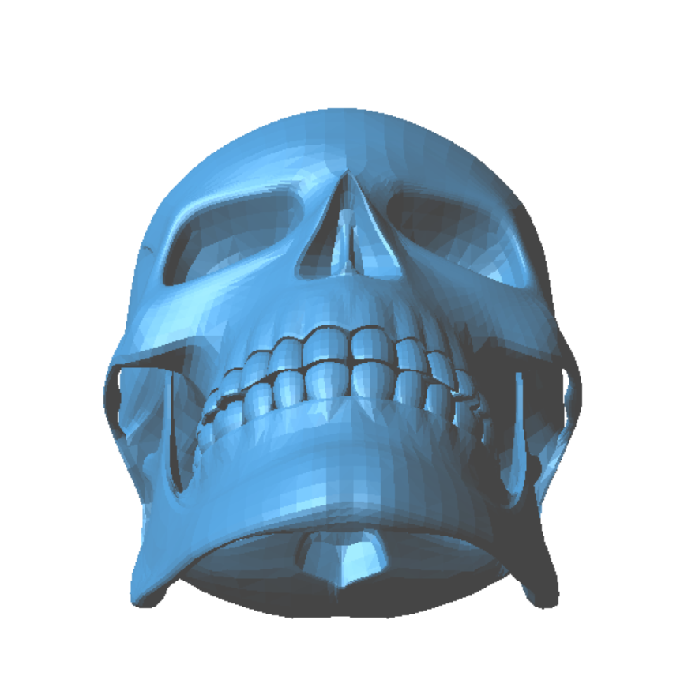
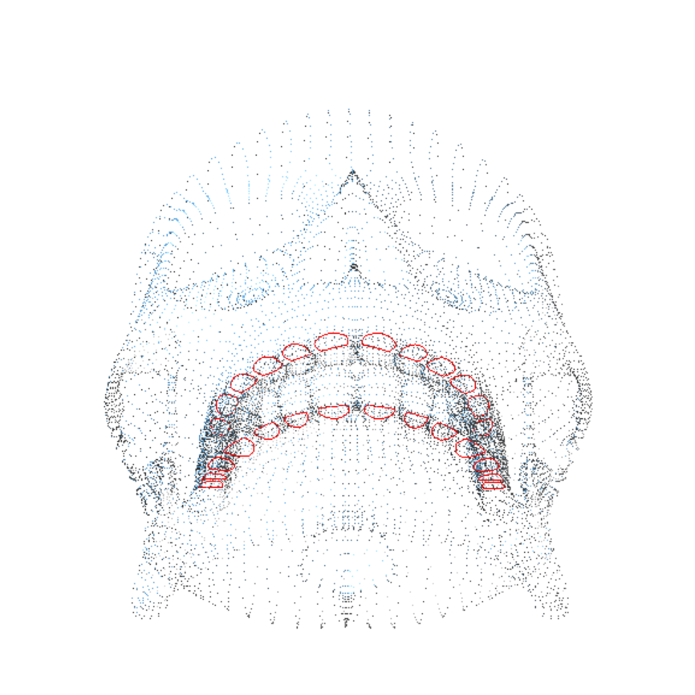
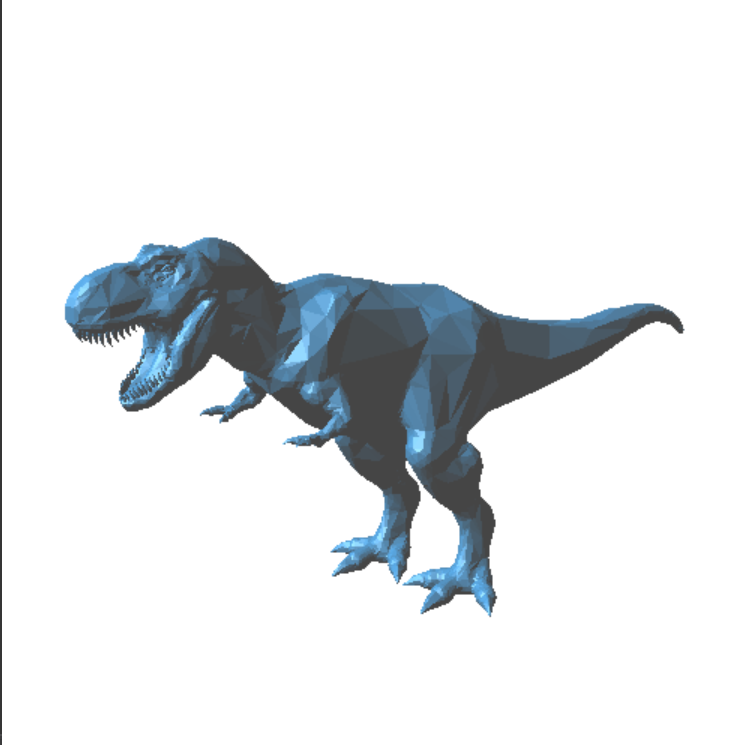

3D Mesh to Voxels
Table of Contents
About
As part of the animation and modeling class, students learnt about the techniques employed for animation (i.e. keyframes, forward & inverse kinematics, etc.) and for modeling (i.e. mesh modification, reconstruction, etc.). In this modeling assignment, we were tasked to design a programme with its own system for reading .obj and .stl models. The programme displays statistics to help the user analyse the model and to learn more about different modeling algorithms, I chose to implement voxelization too.
The programme does the following:
- Displays information like angle statistics and number of components
- Shows boundary edges in red (edges shared by only exactly one triangle)
- Computes voxels by checking for intersection between triangles and OctTree subregions, using Separating Axis Theorem
A skull model with vertices and boundary edges drawn:
 A T-rex model and voxels computed with OctTree of depth = 7:

Installation
The code and instructions for installation are located on GitHub at https://github.com/clarlzx/Voxel.